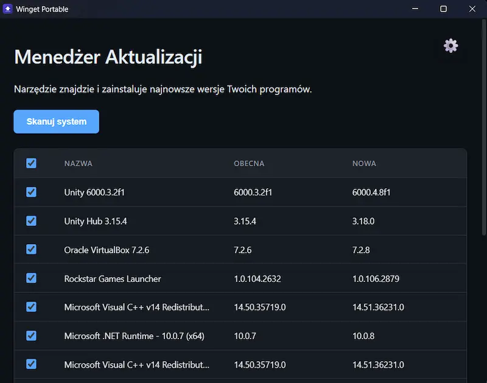
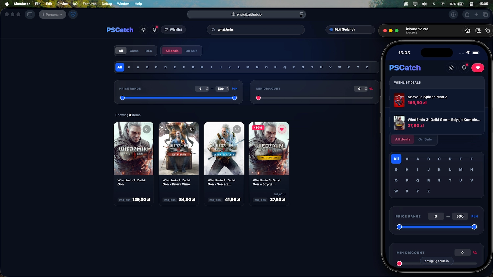
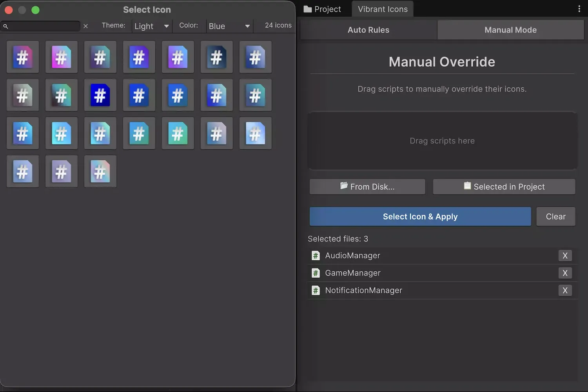
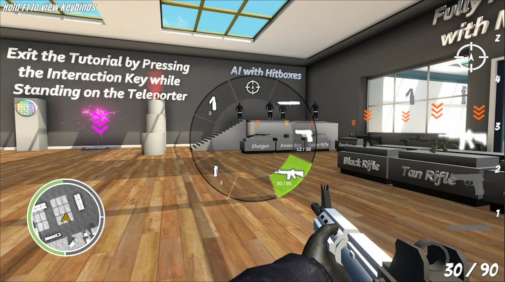
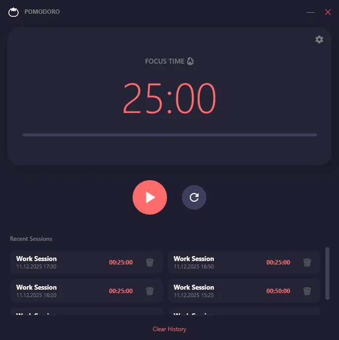
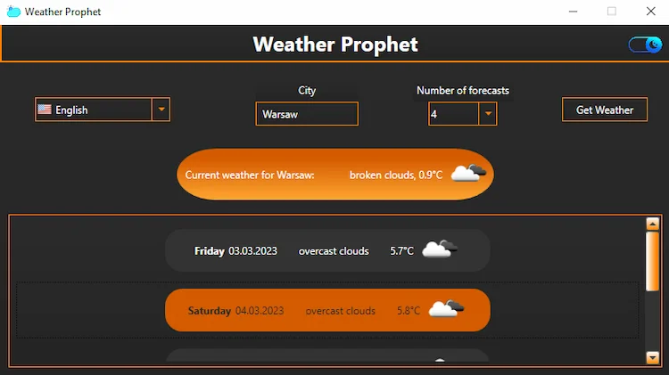

Paweł Trojański Implementation Specialist, Unity Developer, Software Engineer
Client problem solver at Printbox. Instance configs, Shopware, PrestaShop, Shopify integrations. After hours: Unity tools, desktop apps in C# & Rust.
$ cat role.txt
Implementation Specialist @ Printbox
$ ls ~/interests
unity/ cybersecurity/ dotnet/ hardware/
$ cat education.txt
MSc Cybersecurity @ WSEI Kraków
$ status --check
[OK] Employed, open to a chat_
About Me
I’m an Implementation Specialist at Printbox, where I tackle complex technical challenges and turn them into reliable solutions for our clients. My day-to-day is all about troubleshooting, system configuration, and making sure the software actually does what it’s supposed to do, without the extra headaches.
I hold a Master’s degree in Cybersecurity, which gave me a deep appreciation for secure coding and solid system architecture. I balance that background with a hands-on approach to C# (.NET) and Unity development.
Beyond the screen, I’m a hardware enthusiast and a gamer at heart. Understanding the full stack, from low-level hardware to high-level architecture, is what drives me to keep learning.
View ResumeTech Stack
Daily drivers
Languages
Platforms & Tools
E-commerce
Domain
My Timeline
Technical Implementation Specialist
Printbox
Solve client issues, configure client instances, and connect them with e-commerce platforms such as Shopware, PrestaShop and Shopify.
Current JobMaster’s Degree
WSEI Kraków
Graduated in Applied Computer Science with a focus on Cybersecurity. Successfully defended my master’s thesis.
Bachelor’s Degree
WSEI Kraków
Graduated in Applied Computer Science with a specialization in Games and Multimedia. Successfully defended my engineering thesis.
Medical Receptionist
Punkt Szczepień Powszechnych Łapanów, Przychodnia Bocheńska
Handled patient registration and front-desk support in fast-paced medical settings. Built strong communication and problem-solving under pressure.
IT Technician
ZSTiO Limanowa
Focused on hardware diagnostics, networking fundamentals, and initial steps in programming.
Certifications
-
CCNP: Core Networking (verify credential)
Credly by Pearson / Jan 2026
-
DevNet Associate (verify credential)
Credly by Pearson / Jan 2026
-
Neo4j Graph Data Science (verify credential)
Neo4j GraphAcademy / Dec 2024
-
Neo4j Certified Professional (verify credential)
Neo4j GraphAcademy / Dec 2024
-
Azure Data Fundamentals
Microsoft / Jan 2023
-
Algorithms & Data Structures (verify credential)
ZPSB / Navoica / Dec 2022
-
Security Fundamentals
Microsoft MTA / Dec 2021
-
Discrete Mathematics (verify credential)
ZPSB / Navoica / Dec 2021
-
Software Development & HTML5
Microsoft MTA / May - Jun 2021
-
Database Administration
Microsoft MTA / Dec 2020
-
CCNA: Introduction to Networks
Cisco Networking Academy / Apr 2019
-
IT Essentials
Cisco Networking Academy / Apr 2019
Highlighted Projects

Winget Portable
- Rust
- Tauri
- Vanilla JS
Problem Keeping Windows apps current means updating them one by one.Built A single-exe tool that scans and batch-updates everything via Winget.

PSCatch
- React
- Tailwind
- Supabase
Problem PlayStation prices differ across US, UK, EU and PL stores.Built A tracker that merges four regions into one filterable grid, with wishlists.

Vibrant Icons
- Unity
- C#
Problem Every Unity script shares the same generic icon.Built An Editor tool, published on the Asset Store, that gives scripts custom icons.

Operation Deratization
- Unity
- C#
- FSM
Game A low-poly battle royale FPS made by a 4-person team.My role Animation and gameplay code. Enemies run on an FSM over NavMesh.

Pomodoro Timer
- C#
- WPF
- MVVM
Problem Focus timers that pull you out of the work.Built A distraction-free .NET 10 timer with taskbar progress and session history.

Weather Prophet
- C#
- WPF
- REST API
Problem A legacy weather app that was hard to maintain.Built A rewrite to MVVM on .NET 10 with live localization and two themes.
01 / 06
Open to connecting
Let’s stay in touch!
Although I’m currently happily employed at Printbox, I’m always open to discussing new technologies, sharing knowledge, or just having a chat about Unity development and Cybersecurity trends.